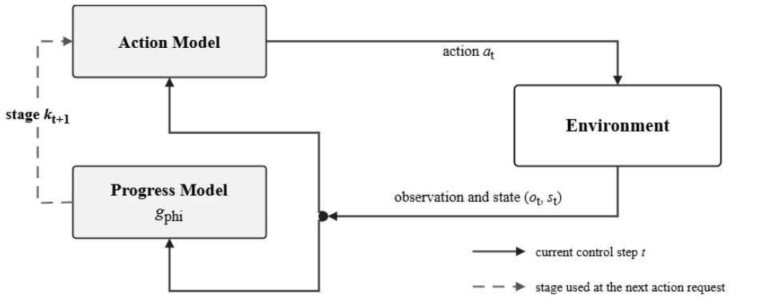
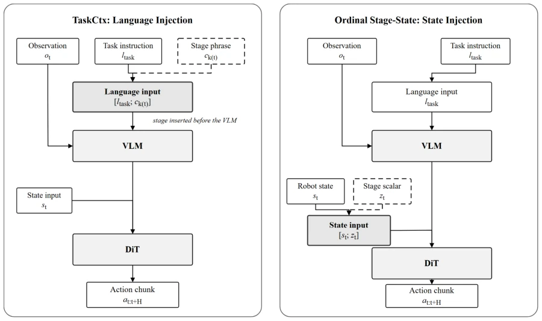

这篇论文像个冷静的“泼冷水”专家，专门研究给 VLA 模型喂“进度条”到底有没有用。作者没搞花哨的新架构，而是死磕一个朴素问题：把任务拆成阶段后，怎么把阶段信息塞进策略里？结果挺打脸，直觉认为“分阶段能降低动作分布方差”的想法在直接微调时完全失效，甚至不如不加阶段信息的原版。只有在全任务基线微调后的继续训练中，用状态向量存阶段索引才赢了。这提醒我们，光有标注不够，接口设计才是关键。虽然结论有点“反直觉”，但实证价值高，毕竟在 Embodied AI 里，知道什么*不*有效比盲目堆模块更稀缺。
This paper acts like a calm 'cold-water' expert, specifically studying whether feeding 'progress bars' to VLA models is actually useful. The authors did not pursue fancy new architectures, but instead doggedly tackled a fundamental question: after splitting tasks into stages, how to inject stage information into the policy? The results were quite counter-intuitive; the intuition that 'staging can reduce action distribution variance' completely fails during direct fine-tuning, even performing worse than the original version without stage information. Only in continuation training after full-task baseline fine-tuning, storing stage indices in the state vector proved superior. This reminds us that having annotations alone is not enough; interface design is key. Although the conclusion is somewhat 'counter-intuitive', the empirical value is high, after all, in Embodied AI, knowing what is *not* effective is scarcer than blindly stacking modules.
In long-horizon manipulation tasks, one high-level instruction corresponds to multiple action stages, for example, 'put the moka pot on the stove' includes sub-steps like approach, grasp, place, etc. Existing works such as RT-H [9] and DeMiAn [10] have demonstrated the technical feasibility of fine-grained subtask annotations, enriching demonstration data. However, these studies assume annotations themselves improve performance, yet ignore the 'interface' problem: once trajectories are segmented, how should the action policy receive and utilize this information? As language prompts or state inputs? Furthermore, progress-aware systems like ProgVLA [11] can track progress, but do not explicitly compare the specific impact of different interfaces on VLA fine-tuning. This study aims to fill this gap, exploring how explicit subtask information should be represented and introduced during VLA fine-tuning stages, avoiding blindly relying on annotations while neglecting the learning burden brought by interface design.
The overall process is based on the GR00T N1.6 backbone network, adopting a strategy of freezing the visual encoder, fine-tuning only the top four language layers and the action projector. The core lies in building a Progress Module, which predicts stage completion based on current observations and task instructions, and maintains a stage pointer. This pointer is exposed to the action policy through two interfaces: one is the Semantic Text Interface (TASKCTX), appending the current stage phrase to the task instruction; the second is the Ordinal State Interface (ORDINAL STAGE-STATE), normalizing the stage index to a scalar and concatenating it into the robot state vector. Training is divided into two arrangements: Direct Fine-tuning and Continuation after baseline. In direct fine-tuning, the model adapts to downstream tasks from scratch and learns the interface; in continuation fine-tuning, full-task instruction fine-tuning is completed first, then stage information is introduced. The completion scalar of the progress module is only used to advance the pointer, not directly input to the action model, ensuring the experimental variable is only the interface form.

Fig. 1. Closed-loop rollout pipeline. A single action model produces the current action chunk. While the environment executes that chunk, the progress model updates the stage controller for the next request. The action model is treated as one module; only its stage-information input differs across experiments.

Fig. 2. Stage-information injection routes. Each experiment selects one mapping from the shared stage pointer to the inputs of the same action-model module. TASKCTX changes language; ORDINAL STAGE-STATE appends the normalized ordinal value to robot state.
Experiments are conducted on the LIBERO-10 benchmark, using the GR00T N1.6 model. Direct fine-tuning for 5k steps, continuation fine-tuning continues for 1k steps after 5k baseline steps. The main metric is success rate. Results show, under direct fine-tuning, the original (ORIGINAL) success rate 57.45%, outperforming text interface (50.24%) and state interface (54.36%), indicating explicit stage information does not automatically improve the policy. But under continuation fine-tuning settings, state interface (53.75%) surpasses original (49.07%) and text interface (50.00%), and wins in all three paired runs. This indicates the effectiveness of stage information highly depends on training arrangement and interface form. The reason state interface wins in continuation fine-tuning may be because as a low-dimensional variable it does not disrupt the learned full-task language context, while text interface changes the language conditioning, increasing adaptation difficulty.